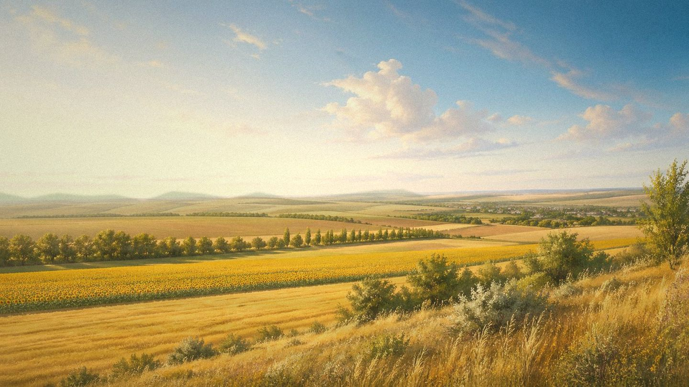

Главная / Воронежская область

Воронежская область
Что посадить
Что посадить
в Воронежской
области
Выберите часть области: более прохладную северную лесостепь, универсальную Воронежско-Донскую зону или сухую южную степь с высоким потенциалом для теплолюбивых культур.
Более мягкая по жаре, но местами влажная лесостепь: хорошо идут корнеплоды, капустные, яблоня, ягоды и ранние овощи.
Открыть страницу зоны → Воронежско-Донская чернозёмная зонаСамая универсальная часть области: мощные чернозёмы, хороший прогрев, широкий набор овощей, плодовых и ягодных культур.
Открыть страницу зоны → южная степь и донские склоныСамая тёплая и сухая зона: сильны томаты, бахчевые, виноград и косточковые, но урожай зависит от влаги и защиты от суховеев.
Открыть страницу зоны →